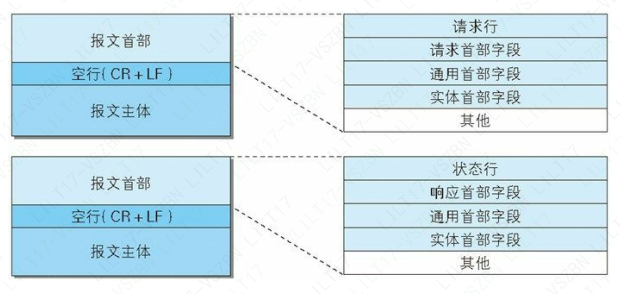
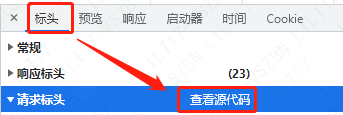
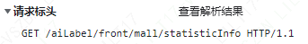
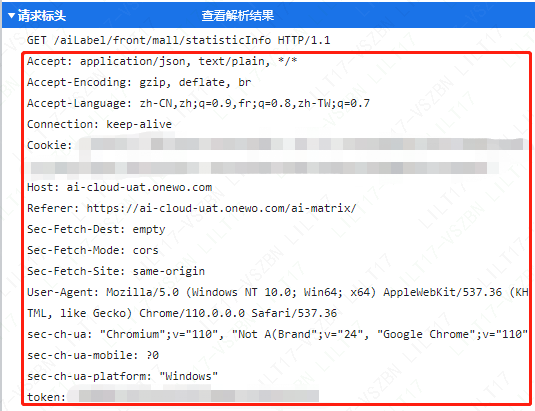

《图解HTTP》阅读手记（中）

第三章 HTTP 报文内的 HTTP 信息

一、报文首部（请求报文）
1.请求行
包含用于请求的方法，请求 URI 和 HTTP 版本。


- 请求方法
- URI（统一资源标识符）
URI 用字符串标识某一互联网资源，而 URL（统一资源定位符） 表示资源的地点，可见 URL 是 URI 的子集。 - HTTP 版本
2、各种首部字段
首部字段是由首部字段名和字段值构成的，中间用冒号“:” 分隔。
- HOST：指定客户端要访问的域名/请求资源所在服务器（在一个服务器中可能拥有多个 Host 的应用服务，此时仅仅通过 IP 无法访问到对应的服务，可通过 Host 来进行定位。）
- Content-Type：表示报文主体的对象类型（如 text/html）
- Accept：客户端能接受的媒体类型
- Accept-Charset：客户端可接受的字符集（优先处理字符集）
- Accept-Language：客户端可接受的自然语言（优先处理的语言）
- Accept-Encoding ：客户端可接受的编码格式（优先处理的编码格式）
- Referer：请求中 URI 的原始获取方（只看 Referer 就能知道请求的 URI 是从哪个 Web 页面发起的）
非 HTTP1.1 首部字段
- Cookie：控制客户端的状态（HTTP 是无状态协议）
- Token：
- Connection: keep-alive：持久连接节省通信量

二、报文首部（响应报文）
1.状态行
包含表明响应结果的状态码，原因短语和 HTTP 版本。
- 状态码
状态码告知从服务器端返回的请求结果